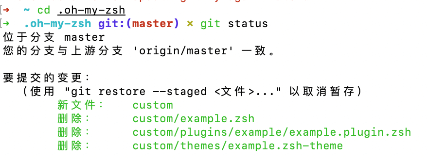
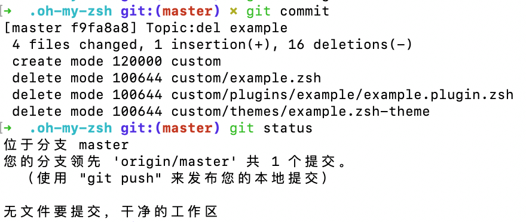
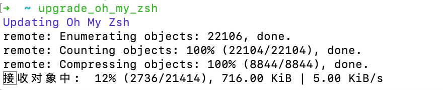
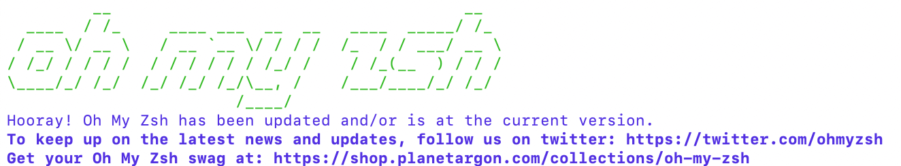

系统重装之后，仍然从 Homebrew 安装了 zsh 与 oh-my-zsh 加强 macOS 上 终端 的功能。今天打开终端之后提示 oh-my-zsh 可以升级，输入 y 之后却提示失败了。
问题与报错
错误提示如下：
[Oh My Zsh] Would you like to check for updates? [Y/n]: y
Updating Oh My Zsh
error: cannot pull with rebase: You have unstaged changes.
error: please commit or stash them.
There was an error updating. Try again later?解决方案
直接把错误提示丢去搜索，得到了一堆搜索结果（看来不止我一个人遇到这个情况）。其中，有一个官方 issues
简单地说，就是之前我在修改 zsh 主题的时候，对.oh-my-zsh 文件夹里的内容进行了更改，而没有进行 commit。
为了验证这个情况，进入到.oh-my-zsh 目录查看了一下 git 仓库的情况。

从上面的核查情况，可以发现确实是修改主题而产生的问题。
知道问题之后就好解决了，可以直接增加 commit 就好。

commit 之后，回到用户目录，再执行更新命令尝试更新

可以看到是顺利进入了下载，直接等他下载完毕自动安装就好，最终顺利安装完毕。
